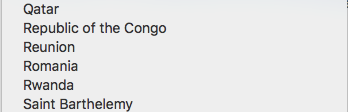

Синичкин Александр
Python dev lead
Usetech Integrations
Как работать с api соцсетей без боли
Спойлер: никак
Наш кейс
- Получить пачку сообщений
- Часть из них сохранить
- Для каждого сообшения дать возможность ответить в соцсеть
- Принять возможный ответ на наш ответ
Для каждой соцсети имплементировать OAuth протокол
Сохранить полученные access_key
- Apache Kafka
- Django
- Celery
До 1000-3000 входящих сообщений в секунду
- Многоступенчатая предварительная фильтрация
- Основные данные для фильтрации в кэш
- Индексы для тех данных, по которым идет фильтрация
Мы принимаем сообщения из всех основных соцсетей
- VKontakte
- Одноклассники
Общие моменты
- Рейт-лимиты
- Вэб хуки
- Scope
Ограничения
- Инстаграм не дает пользоваться api через 1-24 часов после регистрации нового аккаунта без подтверждения телефона
Твиттер няшка
url = 'https://api.twitter.com/1.1/statuses/update.json'
headers = {
'authorization': 'OAuth',
...
}
params = {
'status': 'I am at Dev Pro',
'attachment_url': 'https://twitter.com/raymondh'
'/status/1098662827496067072'
}
requests.post(url, params=params, headers=headers)
url = 'https://api.twitter.com/1.1/direct_messages/events/new.json'
headers = {
'authorization': 'OAuth',
...
}
data = {
"event": {
"type": "message_create",
"message_create": {
"target": {"recipient_id": "RECIPIENT_USER_ID"},
"message_data": {"text": "Hello World!"}
}
}
}
requests.post(url, data=data, headers=headers)
Бизнес аккаунт
Не круто
Official api
'/users/self' - owner of token
'media/{media-id}/comments' - only comments
Unofficial api
- Неофициально - запросы вытягиваются из браузера
- Маскируются под конечные устройства
- Не всегда имплементируют OAuth
InstagramAPI = InstagramAPI("login", "password")
InstagramAPI.login()
Крутяшки, но поначалу сложно
GraphQL, no other choices
url = 'https://graph.facebook.com/v3.2/{object-id}/comments'
data = {
'message': 'Hello from Dev Pro',
'access_token': '{your-page-access-token}'
}
requests.post(url, data=data)
Строгая валидация приложений
Боль
Самая отвратительная документация
Часто не отражает реальную картину
url = 'https://api.vk.com/method/wall.createComment'
data = {
'owner_id': -39848934,
'post_id': 2482482
'message': 'Hello from Dev Pro',
'access_token': '{ACCESS_TOKEN}',
'v': '5.95'
}
requests.post(url, data=data)
Прикрепить изображение к комментарию
requests.get('https://api.vk.com/method/photos.getUploadServer')
multipart_form_data = { # до 5 файлов
'file1': ('img1.jpg', open('img1.jpg', 'rb')),
'file2': ('img2.jpg', open('img2.jpg', 'rb')),
}
request.post(upload, files=multipart_form_data)
{
"server":123456,
"photos_list":"[{\"photo\":\"e9f2eba71b:y\",\"sizes\":[[\"s\",\"123456852\",\"e65f\",\"Br4ir9YAvO8\",75,41],[\"m\",\"123456852\",\"e660\",\"Lqpe1N8s8zY\",130,71],[\"x\",\"123456852\",\"e661\",\"tRFbnaIP_4c\",604,330],[\"y\",\"123456852\",\"e662\",\"8JhBOy0qR6o\",748,409],\"kid\":\"569c3da3b168b347315aa5adc92a953a\",\"debug\":\"xsymyxyyyoypyqyry\"}]",
"aid":98754321,
"hash":"22b333dbbef7cd9b1f9829b5f8713f86"
}
requests.get('https://api.vk.com/method/photos.save',
params={'server': ..., 'photos_list': ..., 'album_id': 111}
)
"photos_list":"[
{
\"photo\":\"e9f2eba71b:y\",
\"sizes\":[
[\"s\",\"123456852\",\"e65f\",\"Br4ir9YAvO8\",75,41],
[\"m\",\"123456852\",\"e660\",\"Lqpe1N8s8zY\",130,71],
[\"x\",\"123456852\",\"e661\",\"tRFbnaIP_4c\",604,330],
[\"y\",\"123456852\",\"e662\",\"8JhBOy0qR6o\",748,409],
\"kid\":\"569c3da3b168b347315aa5adc92a953a\",
\"debug\":\"xsymyxyyyoypyqyry\"
}
]"
url = 'https://api.vk.com/method/wall.createComment'
data = {
'owner_id': -39848934,
'post_id': 2482482
'message': 'Hello from Dev Pro',
'access_token': '{ACCESS_TOKEN}',
'v': '5.95',
'attachments':'{type}{owner_id}_{media_id},photo66748_265827614'
}
requests.post(url, data=data)
Публикация от имени сообщества
url = 'https://api.vk.com/method/wall.createComment'
data = {
'owner_id': -39848934,
'post_id': 2482482,
'from_group': 1
}
requests.post(url, data=data)
url = 'https://api.vk.com/method/wall.createComment'
data = {
'owner_id': -39848934,
'post_id': 2482482,
'from_group': -{group_id}
}
requests.post(url, data=data)
- Оставить комментарий на публикацию
- Получить по вебхуку личное сообщение
- Ответить на личное сообщение
Получение обычного токена
https://oauth.vk.com/authorize?scope=photos,messages,wall
&client_id=1&redirect_uri=http://example.com/callback
Получение токена для группы
https://oauth.vk.com/authorize?client_id=1&redirect_uri=http://example.com/callback
&scope=photos,messages
&group_ids=234,8494
Используя ключ для групп мы можем
- Оставить комментарий на публикацию - нет
- Получить по вебхуку личное сообщение - да
- Ответить на личное сообщение - да

Самое бедное api
Пришлось использовать Selenium
Можно добавить несколько вебхуков
но метод https://apiok.ru/dev/graph_api/methods /graph.user/graph.user.subscriptions/get
всегда выдаст только один
* Приходит сообщение по вебхуку *
* В сообщении есть прикрепленные файлы *
* Выглядит примерно так 'image_urls': [None] *
Разная верстка для разных браузеров. А у нас Selenium.
Несколько общих правил
- api соцсетей постоянно меняются
- правила соцсетей постоянно меняются